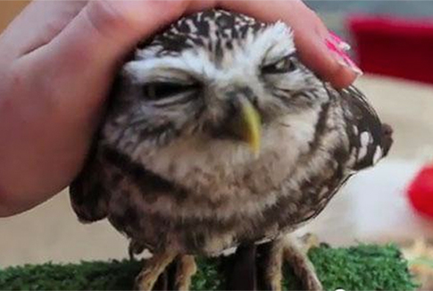
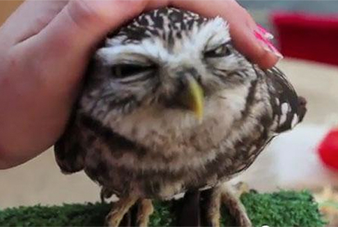

Why do I like owls so much?
- adorable

- cuddly

- smart

More reason?!
- Harry Potter
- Birds of Prey
- Sharp Focus
Most birds of prey sport eyes on the sides of their heads, but the stereoscopic nature of the owl's forward-facing eyes permits the greater sense of depth perception necessary for low-light hunting. More information about owls...
"The Owl & the Pussy-cat went to sea
In a beautiful pea-green boat"
 
